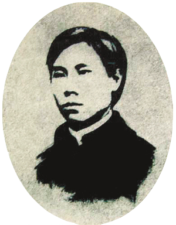

辛亥风云

20世纪初的上海市资产阶级革命派的重要活动
基地之一。1903年，《苏报》连载邹容的《革 命军》，宣传反清革命思想。1904年陶成章等 在上海建立光复会。1907年，秋瑾主编的主张 女权的《中国女报》在上海创刊。这些新思想 对推动民族革命起了很大作用。此外，革命党 人宋教人、陈其美等积极联络各行业商圈，于 1911年7月在上海成立同盟会中部总会，促进了 长江中下游地区的革命活动。1911年10月10日， 武昌起义爆发，上海革命党人积极响应，于11 月3日举行武装起义并光复上海，建立了沪军部 督府。
